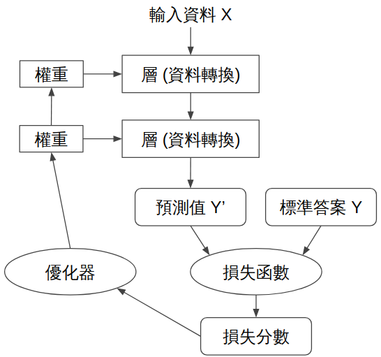
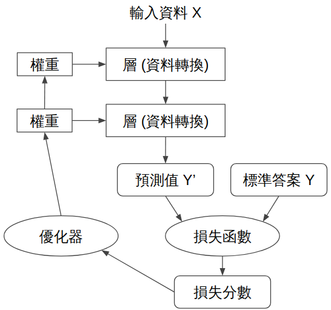

計算機程式概論課程
可攜式系統組成內容介紹
組員：41423201余思葶、41423204徐雨晴、41423205張詠晴、41423224林靖叡、41423230張倬翊、41423248蔡承修

Git是什麼
「凡走過必留下痕跡」Git就是在做這件事情，任何一舉一動 Git 都記錄了下來，並且同步遠端的資料庫
Repository（儲存庫）：專案的資料夾，裡面有 Git 記錄的歷史。
Commit（提交）：你每次存檔，會有一個版本紀錄（誰改的、改了什麼）。
Branch（分支）：你可以平行開不同的開發線路，不會互相干擾。
Merge（合併）：把分支的改動整合回來。
Remote（遠端）：像 GitHub、GitLab、Bitbucket 這種雲端版本庫，讓大家可以同步合作。
GitHub是什麼?
GitHub集結了世界各地許多工程師的智慧結晶，舉凡是資料庫、開源程式碼等等這些都可以在 GitHub 上找到相關的資料庫。
AI 神經網絡甚至也可以從中找到模組或者架構，就例如：AI 網路爬蟲、tensorflow 這類的神經網絡架構，因此只要會寫程式或對某個程式應用方面有些許了解，GitHub 上的資料就可以提供強力幫助。

AI 神經網絡甚至也可以從中找到模組或者架構，就例如：AI 網路爬蟲、tensorflow 這類的神經網絡架構，因此只要會寫程式或對某個程式應用方面有些許了解，GitHub 上的資料就可以提供強力幫助。

Gits是什麼?
Gits 用來快速分享程式碼片段、筆記或任何文字檔，並且只要有連結就可以快速地將檔案分享給其他人。
常被用來放程式碼範例、快速筆記、或是分享設定檔。
常被用來放程式碼範例、快速筆記、或是分享設定檔。
Cmsimde是什麼?
CMSiMDE 是一套以 Python 和 Flask 框架開發的網際內容管理系統，專注於機械設計領域，可管理數位內容，並具有部落格與網頁簡報製作等功能。